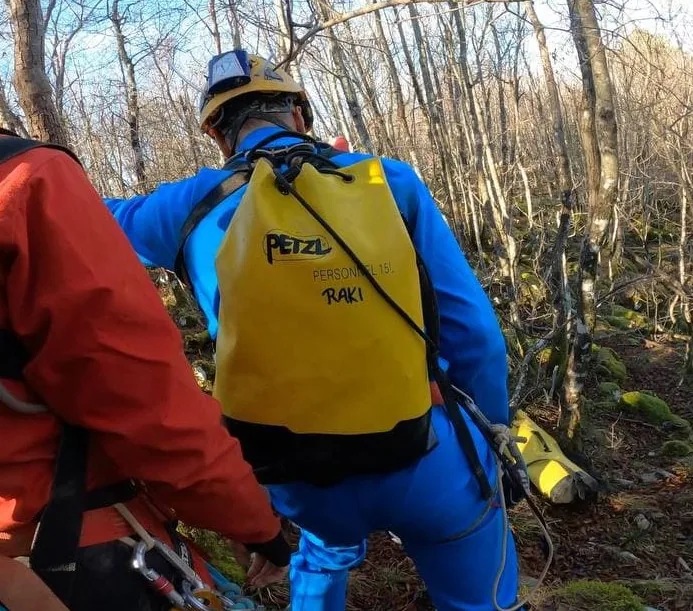

Speleološki početak godine u Istri
Nakon cijelog tjedna promišljanja kuda bi, vikend iza Nove godine raspoložena ekipa iz SK HAD, SD Pazin, SD Proteus i SO Velebit otišla je na Ćićariju, u špilju Golubinku.

Marko Rakovac,
Antonio Ciceran
Golubinka na Krasu, 02.01.2022. (nedjelja)
Vikend iza Nove godine smo Antonio Ciceran - Cico, Aleksandar Fabriš - Aleks (SK HAD), Karlo Brajković (SD Pazin), Dora Perinčić (SO Velebit), Nini Legović (SD Proteus-Poreč) i moja malenkost (SO Velebit, SD Proteus) bili u špilji Golubinka na Krasu (na Ćićariji). Špilja s jamskim ulazom ima 85m dubine te oko 450m stvarne duljine (nisu do kraja povučeni vlakovi). Objekt obiluje sigama te ima zanimljivih provlačenja i prečki ("sportska jama"). Tehnički smo popeli kamin 23m u + koji završava, proširivali smo kanal na dnu ali nismo mogli iskoristiti "treći član" zbog obilne sigovine (kažu dečki da bi tribalo nešto što brže gori) pa su zveknuli jedan hilti metak. Uglavnom akcija od cca 9-10 sati, bilo nam je šesno.
Penjanje na Kamenitim Vratima, 08.01.2022. (subota)
Prethodno smo kroz tjedan razmišljali kako iskoristiti vikend za jamarenje te smo imali ideju preopremanja i istraživanja Jame Duša na Crnopcu ili rekognociranje područja Ćićarije oko Jame Rašpora za što je Dinom Grozić dobio uvid u podatke o potencijalnim ulazima preko lidar tehnologije. S obzirom na to da je u međuvremenu stigla hladna ciklona i pao je snijeg, pristup Crnopcu i Rašporu bitno se otežao, odlučili smo subotu provesti na slobodnom penjanju kod Buzeta, a nedjelju s ekipom iz SK HAD u nastavku istraživanja jame Kralićevi dvori (na Ćićariji). U subotu smo Dora i ja posjetili penjalište Kamena Vrata u dolini rijeke Mirne. Prekrasni početnički smjerovi (ocjene IV-V) na južnoj (osunčanoj) stijeni su nas brzo okrijepili nakon čega smo zadovoljni otišli na do Motovnuna na zidine ispiti zasluženo pivo uz zalazak Sunca.
Penjalište link https://www.climbistria.com/climbing-locations/croatia/kamena-vrata/ .
Kralićevi Dvori, 9.1.2022. (subota) – isječak izvještaja kojeg je sastavio Antonio Ciceran – Cico (SK HAD Poreč)
Bile su dvije ekipe, radna Dino, Alex i ja, a druga turistička Raki, Dora i Nini. Kako sam zaboravio bušilicu doma imali smo vremena za izgubit po Ćićariji pa smo se vozili, pili kavu i uživali u toploj limenoj kutiji. Čekali smo Rakija da donese bušilicu kako bi mogli uopće radit na dnu. Tek oko 12 i 30 h ulazimo u jamu i spuštamo se prema dnu. Druga turistička ekipa za nama je došla do pred dno, malo se podružili i svako svojim putem. U suženjima na samom dnu smo širili te nakon 7-8 sati rada, Dino je imao čast spustiti se u novi dio. Spustili smo se 2m u manji prostor s jednim saljevom. Ustanovili smo 2 upitnika od kojih se jedan nalazi iznad najdublje točke te je dosta nezgodno za priči suženju, a za širiti ima dobar metar sigovine iza koje je manja rupa i ide vertikala 8-10 m dubine. Drugo suženje je od mjesta di smo se spustili užetom pa na vrh saljeva gdje je potrebno malo proširiti za napredovati dalje. Iza suženja se vidi još 2-3 m nastavak saljeva gdje se procjeđuje voda. Na tom suženju se osjeti slabo strujanje zraka. Nakon tog, krcamo transportne i penjemo sljedećih sat vremena sa 100 m dubine do izlaza. Izašli smo oko 22h. Već smo previše napora potrošili u tu jamu tako da pomoć pojedinaca u određenim akcijama dobro dođe, kurba svinja Ćićarija.
Pozdrav i hvala svima!
Ulaz u Kralićeve dvore